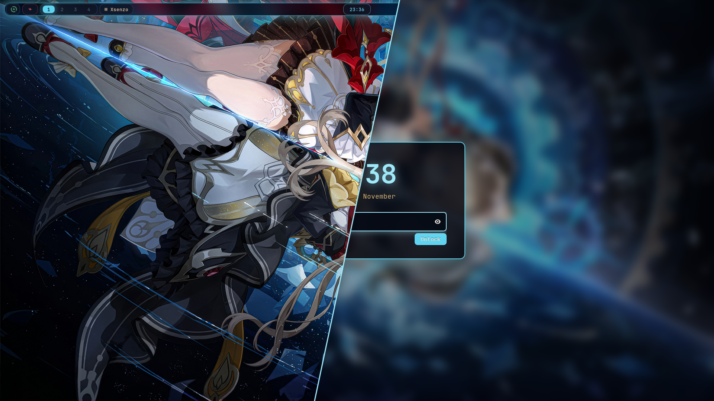

Clockwork
Clove's dots
swayfx on Void Linux, and hopefully on your distro too.
The whole theme comes from the wallpaper: deep-space navy, glowing gear cyan, crimson and gold. Bar, terminal, launcher, lock screen and login screen all match.

What's in it
- swayfx
- window manager, with blur, shadows and rounded corners
- waybar
- status bar
- kitty
- terminal, with an oh-my-posh prompt
- fuzzel
- app launcher
- mako
- notifications
- gtklock
- lock screen
- sddm
- login screen to match
- sound
- a looping background track, only while plugged in (optional)
- cursor
- sandrone-linux, which I made myself
Click a colour to copy it.
Install
One line. It grabs the latest version, copies everything into place and cleans up after itself. Re-run it any time to update.
curl -fsSL https://dots.doughmination.gay/install | bash
# or see what it'll do first
curl -fsSL https://dots.doughmination.gay/install | bash -s -- --dry-runRather work from a clone?
git clone https://github.com/doughmination/dots
cd dots
bash install --local
On Arch, anything missing from the repos comes from the AUR with yay or paru
(paru gets installed if you have neither). Anything already in the way is renamed
to .bak-<date>, never deleted.
The six parts
The installer runs these in order. Each one works on its own too.
install-deps.sh |
The software. --no-flatpak or --no-services skip those bits.
|
|---|---|
install-git.sh |
Your git name, email and default branch. |
install-assets.sh |
The font and the cursor. |
install-config.sh |
Configs into ~/.config, and bashrc to ~/.bashrc.
|
install-scripts.sh |
Helper scripts into ~/.local/bin. |
install-sddm.sh |
The login screen. |
Login screen
The installer always sets up the SDDM theme. From a clone you can tweak or undo it:
./install-sddm.sh
# still wallpaper instead of the video
./install-sddm.sh --no-video
# put your old sddm.conf back
./install-sddm.sh --uninstallBackground sound
Off by default. To turn it on, edit ~/.config/sway/config and reload.
Re-installing keeps it on.
set $ambient_sound on
set $ambient_volume 30Super+M mutes it until the next reload.
The bar
Most of waybar is clickable.
| Module | Left | Middle | Right |
|---|---|---|---|
| Battery | Power saver on/off | Pick a power profile | Performance on/off |
| Clock | This month's calendar | ||
| Brightness | Toggle 15% / 100% | ||
| Network | Wi-Fi on/off | nmtui | |
| Bluetooth | Bluetooth on/off | bluetui | |
| Volume | Mute | pavucontrol | |
| CPU / RAM | btop | ||
| Picture | Still / animated wallpaper | ||
| Coffee cup | Stay awake | ||
| Moon | Night light | ||
| Bell | Notification list | Do not disturb | |
| Package | Run the update | ||
| REC | Stop recording |
The animated wallpaper pauses in power saver, or when the battery's at 20% or less. The package and REC icons only show up when there's something to do.
Keys
Super+/ searches every shortcut, and picking one runs it. These are the ones I actually use:
- Super+Return
- terminal
- Super+Space
- launcher
- Super+Q
- close window
- Super+F
- firefox
- Super+E
- files (yazi)
- Super+V
- clipboard history
- Super+N
- last notification
- Super+B
- hide the bar
- Super+W
- float window
- Super+R
- resize mode
- Super+1…9
- workspace (add Alt to move the window there)
- Super+Alt+L
- lock
- screenshot to clipboard (Ctrl+Shift for a region)
- Ctrl+Alt+Print
- record the screen
- Super+A S D
- previous, play/pause, next
- Ctrl+Alt+Delete
- power menu
The full list is in the README.
Tested on
- Void Linux (glibc)
- Arch Linux
- Debian
- Ubuntu
- Fedora
- NixOS
The rest should mostly work. If one breaks, open an issue.